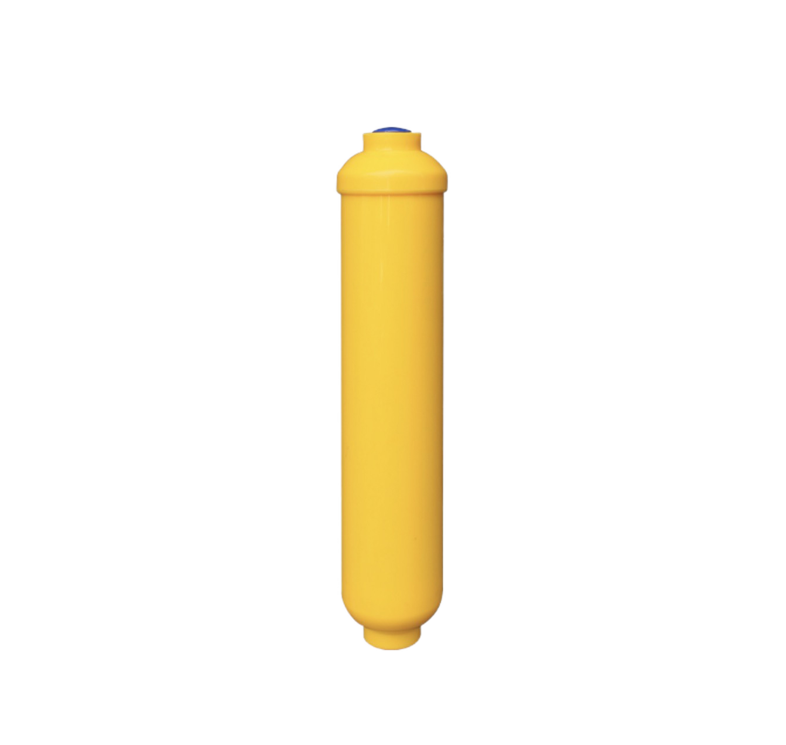
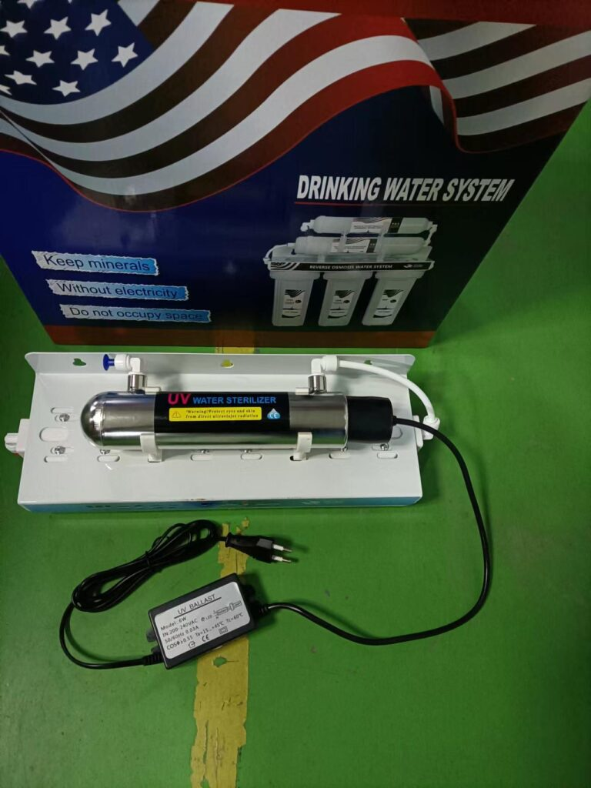
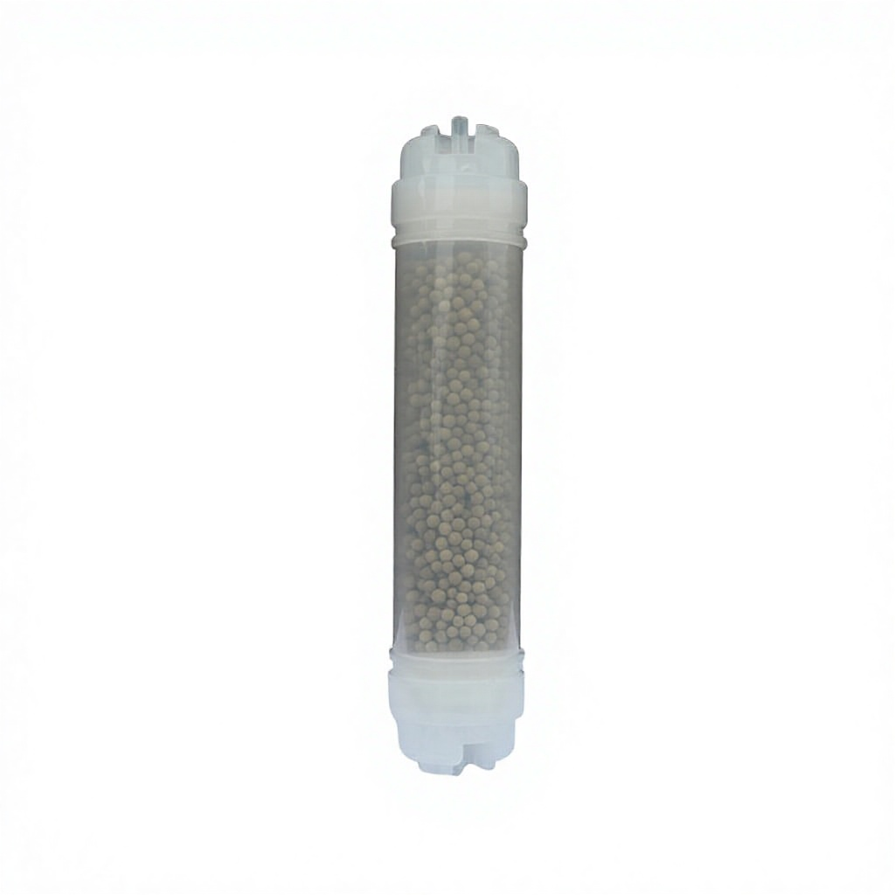

Alkaline Water Purifier System
Produces alkaline water by increasing pH levels and adding essential minerals. Wholesale factory supply, customizable for OEM/ODM....
View Details →
A reverse osmosis (RO) water filter system that is installed under the sink and does not use a pump is known as a gravity-fed reverse osmosis system. These systems rely on water pressure from the incoming water supply to push water through the RO membrane. Manufactured at our 20,000+ m² ISO 9001:2015 certified facility in Yuanhua Town, Haining City, Zhejiang Province, China, this product is part of our full-stack water filtration line — independently tested to NSF/ANSI 42 & 53 standards by SGS, with CE marking for European import compliance and FDA-grade material declarations on request. OEM/ODM private-label customization is available: brand printing, custom end-cap molding, color matching and packaging. Standard MOQ from 1,000 pcs; bulk wholesale FOB Shanghai/Ningbo with T/T 30/70 or L/C at sight payment terms. We currently export to 50+ countries including the United States, Germany, Russia, Saudi Arabia, Malaysia, Indonesia and Brazil, with full halal (JAKIM) certification on file for Muslim markets.
| Filtration Stages | ফিল্ট্রেশন পর্যায় |
|---|---|
| Daily Output | দৈনিক আউটপুট |
| Material | উপাদান |
| Working Pressure | কাজের চাপ |
| Working Temperature | 5°C – 45°C |
| Certifications | সার্টিফিকেশন |
| Warranty | ওয়ারেন্টি |
| Application | প্রয়োগ |
| Stages | Multi-stage |
| Sterilization | UV-C |
| Type | Gravity-fed |
← Back to All Products পণ্য

Produces alkaline water by increasing pH levels and adding essential minerals. Wholesale factory supply, customizable for OEM/ODM....
View Details →
Multi-stage purifier featuring Maifan stone for mineralization and improved water quality. Wholesale factory supply, customizable ...
View Details →